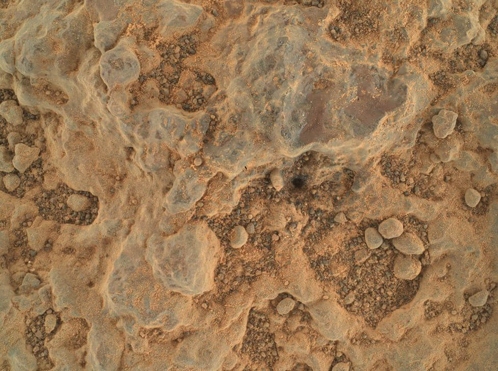
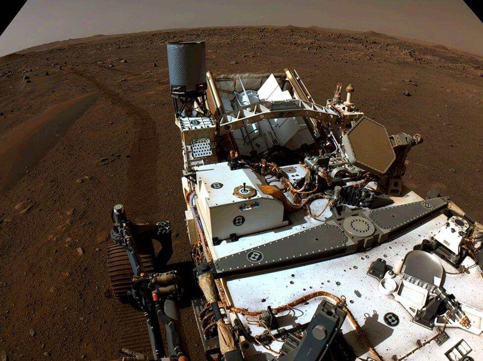
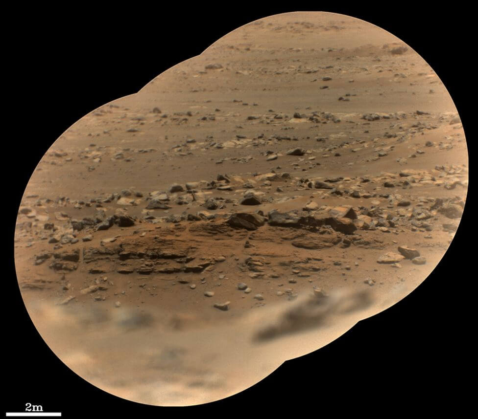
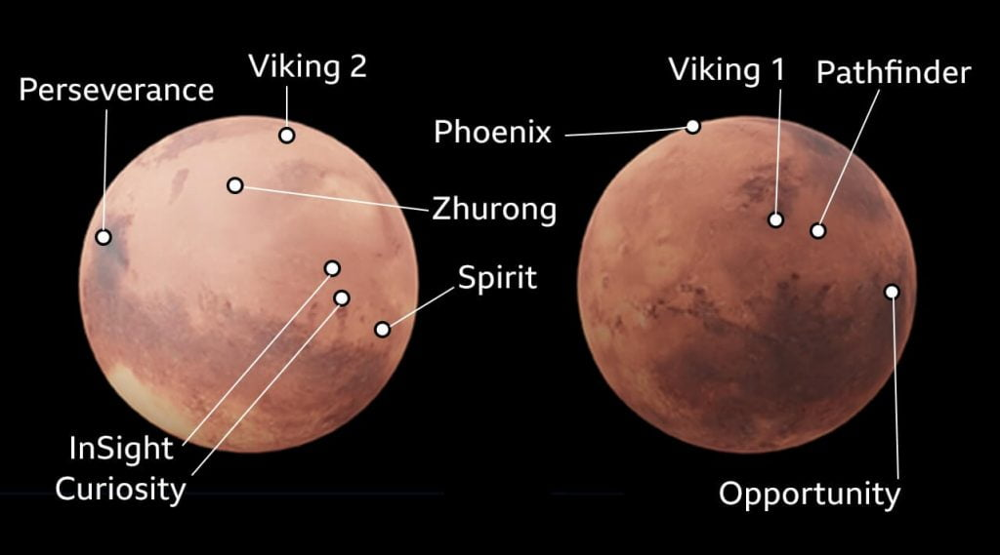

အင်္ဂါဂြိုလ်စူးစမ်းရှာဖွေရေးယာဉ် Perseverance Rover
Perseverance Rover မှာတပ်ဆင်ထားတဲ့ အရှည် ၇ ပေ ရှည်လျားတဲ့ စက်ရုပ်လက်တံမှာ တပ်ဆင်ထားတဲ့ အာရုံခံ ကိရိယာတွေကို အောင်မြင်စွာ စမ်းသပ်နိုင်ခဲ့ပြီလို့ နာဆာက ကြေငြာလိုက်ပါတယ်။ ဒီစက်မောင်းတံနဲ့ တူးဖော်ရရှိတဲ့ ကျောက်နဲ့ မြေသား နမူနာတွေကို ဓါတ်မှန်ရောင်ခြည် (X-Ray) နဲ့ ခရမ်းလွန်ရောင်ခြည် (Ultra violet radiation) သုံး ဓါတ်ခွဲစမ်းသပ်ကိရိယာ တွေနဲ့ ခွဲခြမ်းစိတ်ဖြာ မှာ ဖြစ်ပါတယ်။ဒီ Perseverance Rover ဟာ ဖော်ပြပါ ကိရိယာတွေ အသုံးပြုပြီး အင်္ဂါဂြိုလ် မျက်နှာပြင်က ကျောက်သားတွေရဲ့ မျက်နှာပြင် နေရာ သေးသေးလေးတွေကို အနီးကပ် လေ့လာမှုများ ပြုလုပ်မှာ ဖြစ်ပါတယ်။ ဒီကျောက်သားမျက်နှာပြင် သေးသေးလေးတွေဟာ အတိတ်က သက်ရှိတွေရဲ့ ကြွင်းကျန်ရစ်တဲ့ ကျောက်ဖြစ်ရုပ်ကြွင်းတွေ ရှာဖွေဖို့ အကောင်းဆုံး နေရာတွေ ဖြစ်လို့ပါပဲ။
ဒီ စမ်းသပ်ရှာဖွေရေး ကိရိယာကို PIXL (Planetary Instrument for X-ray Lithochemistry) လို့ အမည်ပေးထားပါတယ်။ ဒီဓါတ်မှန်ရိုက် ကိရိယာကို စမ်းသပ်စဉ် ကာလမှာ ကတဲက အလွန်ကို ထူးခြားကောင်းမွန်တဲ့ ရလဒ်တွေကို အံ့ဩဖွယ် ရရှိခဲ့ပါတယ်။ ဒီလောက် စွမ်းအားထက်တဲ့ ကိရိယာ လေးက တကယ်တော့ ထမင်းဘူး အရွယ်လေးပဲ ရှိတာပါ။ ဒီကိရိယာကနေ အင်အားပြင်းထန်တဲ့ X-Ray ရောင်ခြည်တွေကို ပစ်လွှတ်ပြီး အင်္ဂါဂြိုလ်ရဲ့ ကျောက်နဲ့ မြေသားတွေရဲ့ ဖွဲ့စည်းပုံကို ခွဲခြမ်းစိတ်ဖြာ ပေးနိုင်ပါတယ်။
“အခု မြေသားနမူနာတွေ စမ်းသပ်ရတဲ့ အဖြေက အရင်စမ်းသပ်မှုတွေ အားလုံးထက် သာပါတယ်။ ဒါတောင် ကျောက်သားတွေကို ခွဲပြီး မစမ်းသပ်ရ သေးပါဘူး” လို့ နာဆာပညာရှင် တစ်ဦးက ပြောပါတယ်။
ဒီကိရိယာကို သူ့လက်တံမှာ ပါတဲ့ အခြား ဓါတ်ခွဲစမ်းသပ်ရေး ကိရိယာတွေနဲ့ ပေါင်းစပ်အသုံးပြုလိုက်ရင် ရလာမယ့် ရလဒ်တွေက အလွန်တန်ဖိုးရှိတဲ့ သိပ္ပံ အချက်အလက်တွေ ဖြစ်လာမှာပါ။ ဒါ့ကြောင့်လဲ နာဆာ က ပညာရှင်တွေ စိတ်လှုပ်ရှားနေကြတာ သိပ်တော့ မထူးဆန်းလှပါဘူး။

အင်္ဂါဂြိုလ်ပေါ်က Jezero ရေကန်ဟောင်းကြီး
အခု Perseverance Rover တူးဖော်မှု ပြုလုပ်မယ့် ယဇီးရိုး (Jezero) ဥက္ကာကြွင်းကြီးဟာ ရှေးယခင် နှစ်သန်းထောင်ပေါင်းများစွာ အချိန်က ရေကန်ကြီး တစ်ခု ဖြစ်ခဲ့ပါတယ်။ အခုတော့ ရေခန်းသွားတာ ကြာပါပြီ။ ယခု ဒီစာရေးနေချိန်မှာတော့ ဘီး ၆ ဘီးတပ် စူးစမ်းရှာဖွေရေး ယာဉ်ဟာ ဒီရေကန်ဟောင်းကြီးရဲ့ ကြမ်းတမ်းတဲ့ ကြမ်းပြင်မှာ ခရီးနှင်နေပါပြီ။“အကယ်လို့သာ ဒီ ယဇီးရိုး ရေကန်ဟောင်းကြီးထဲမှာ အသက်ဇီဝတွေ ယခင်က ရှင်သန်ခဲ့ ဖူးမယ်ဆိုရင် ရှိခဲ့ဖူးတဲ့ အထောက်အထားတွေကို ကျွန်တော်တို့ မလွဲမသွေ တွေ့ရမှာပါ” လို့ နာဆာပညာရှင်က ဆက်ပြောပါတယ်။
ဒီ ယာဉ်ပေါ်ပါတဲ့ ဓါတ်မှန်ရောင်ခြည် (X-Ray) နဲ့ အခြား ခရမ်းလွန်ရောင်ခြည် (Ultra Violet Light) သုံး ဓါတ်ခွဲကိရိယာတွေ အသုံးပြုပြီး အင်္ဂါဂြိုလ်ရဲ့ မျက်နှာပြင် ကျောက်သားတွေရဲ့ ဖွဲ့စည်းပုံ၊ အမျိုးအစား၊ အရွယ်အစား၊ ပါဝင်တဲ့ ဓါတ်သတ္တု အစရှိတာတွေကို လေ့လာနိုင်မှာ ဖြစ်ပါတယ်။ ဒါ့အပြင် ယာဉ်ပေါ်ပါ စွမ်းအားကောင်းတဲ့ ဓါတ်ပုံရိုက် ကိရိယာတွေနဲ့လဲ အနီးကပ် ပုံတွေ ရိုက်ယူနိုင်မှာ ဖြစ်ပါတယ်။
အခုထိ ယာဉ်ပေါ်ပါ ကင်မရာနဲ့ ရိုက်ကူးပြီးသမျှ အနီးကပ် ပုံတွေအရကို ပညာရှင်တွေ အနေနဲ့ အင်္ဂါဂြိုလ်ပေါ်က ကျောက်သားဖွဲ့စည်းမှုနဲ့ ပါတ်သက်ပြီး အများကြီး သိကြရပါတယ်။ ဒီ အချက်အလက် အသစ်တွေကို အသုံးချပြီး ဒီကျောက်တွေ ဖြစ်ပေါ်လာပုံ၊ ရေစီးဆင်းပုံတွေနဲ့ အရင် ရှေးခေတ်က ရာသီဥတု နဲ့ သဘာဝ ပါတ်ဝန်းကျင် အခြေအနေတွေနဲ့ ပါတ်သက်တာတွေကို ခန့်မှန်းနိုင်ကြမှာ ဖြစ်ပါတယ်။
သုတေသီ အဖွဲ့သားများ
ဒီ စူးစမ်းရှာဖွေရေး သုတေသန ယာဉ် Perseverance Rover တစ်စင်းအတွက် ကမ္ဘာမြေပြင်မှာ သိပ္ပံပညာရှင်နဲ့ အင်ဂျင်နီယာ ရာပေါင်းများစွာ ပါဝင်တဲ့ အဖွဲ့က အတူပူးပေါင်းပြီး အလုပ်လုပ်ကြ ရတာ ဖြစ်ပါတယ်။ ဒီယာဉ် ပြုပြင်ထိန်းသိမ်းရေး၊ မောင်းနှင်ရေး၊ သုတေသန ရလဒ်တွေကို ခွဲခြမ်းစိတ်ဖြာရေး အစရှိသဖြင့် အဖွဲ့တွေ ခွဲပြီး ဆောင်ရွက်ကြရတာ ဖြစ်ပါတယ်။“မြေပြင် အဖွဲ့မှာ စုစုပေါင်း ပညာရှင် ၅၀၀ လောက်ပါဝင်ပါတယ်။ ဒီ ယာဉ်ရဲ့ လုပ်ငန်း တစ်ခုတိုင်မှာ အနည်းဆုံး လူ ၁၀၀ လောက်က အတူ ပူးပေါင်း ဆောင်ရွက် ကြရတာပါ။ ဒီလို ထိပ်တန်း သိပ္ပံ ပညာရှင်တွေ အတူပူးပေါင်း ဆောင်ရွက်တာ မြင်ရတာဟာ အရမ်းကို အားရစရာ ကောင်းပါတယ်” လို့ နာဆာ ပညာရှင်က ဆက်ပြောပါတယ်။

နာဆာ ပညာရှင်တွေကတော့ ဒီ Perseverance Rover ဟာ အင်္ဂါဂြိုလ်ပေါ်မှာ သက်ရှိတွေ ရှိမရှိ ရှာဖွေပေးနိုင်ဖို့ အကောင်းဆုံး အခွင့်အလမ်း ဖြစ်တယ်လို့ ယုံကြည်နေ ကြပါတယ် ဆိုတာ တင်ပြလိုက် ရပါတယ် ခင်ဗျာ။

